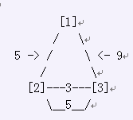

受到秘鲁的马丘比丘的新式水上乐园的启发，Farmer John决定也为奶牛们建
一个水上乐园。当然，它最大的亮点就是新奇巨大的水上冲浪。超级轨道包含 E (1 <= E <=150,000)条小轨道连接着V (V <= 50,000)个水池，编号为1..V。每个小轨道必须按照特定的方向运行，不能够反向运行。奶牛们从1号水池出发，经过若干条小轨道，最终到达V号水池。每个水池(除了V号和1号之外，都有至少一条小轨道进来和一条小轨道出去，并且，一头奶牛从任何一个水池到达V
号水池。最后，由于这是一个冲浪，从任何一个水池出发都不可能回到这个水池)
每条小轨道从水池P_i到水池Q_i (1 <= P_i <= V; 1<= Q_i <= V; P_i != Q_i)，
轨道有一个开心值F_i (0 <= F_i <= 2,000,000,000)，Bessie总的开心值就是经过的所有轨道的开心值之和。Bessie自然希望越开心越好，并且，她有足够长的时间在轨道上玩。因此，她精心地挑选路线。但是，由于她是头奶牛，所以，会有至多K (1 <= K <= 10)次的情况，她无法控制，并且随机从某个水池选择了一条轨道(这种情况甚至会在1号水池发生) 如果Bessie选择了在最坏情况下，最大化她的开心值，那么，她在这种情况下一次冲浪可以得到的最大开心值是多少？ 在样例中，考虑一个超级轨道，包含了3个水池(在图中用括号表示)和4条小轨道，K的值为1
(开心值在括号外表示出来，用箭头标识)

她总是从1号水池出发，抵达3号水池。如果她总是可以自己选择，就是不会发生不能控制的情况她可以选择从1到2(这条轨道开心值为5)，再从2到3(开心值为5)，总的开心值为5+5=10。但是，如过她在1号水池失去控制，直接到了3，那么开心值为9，如果她在2号水池失去控制，她总的开心值为8。Bessie想要找到最大化开心值的方案，可以直接从1到3，这样，如果在1号水池失去控制，这样，她就不会在2号水池失去控制了，就能够得到10的开心值。因此，她的开心值至少为9